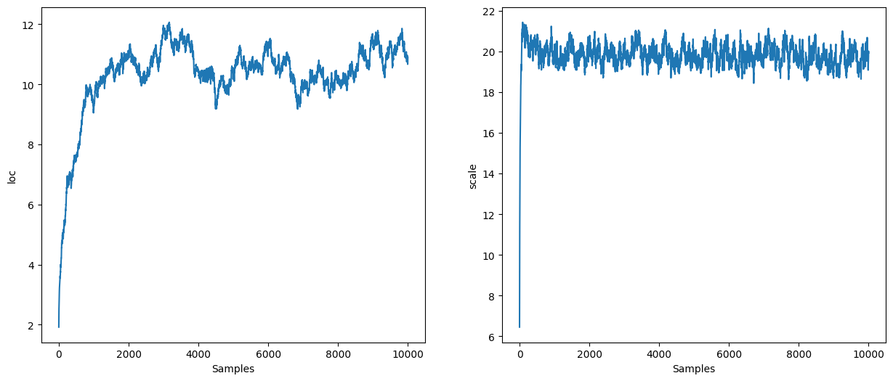
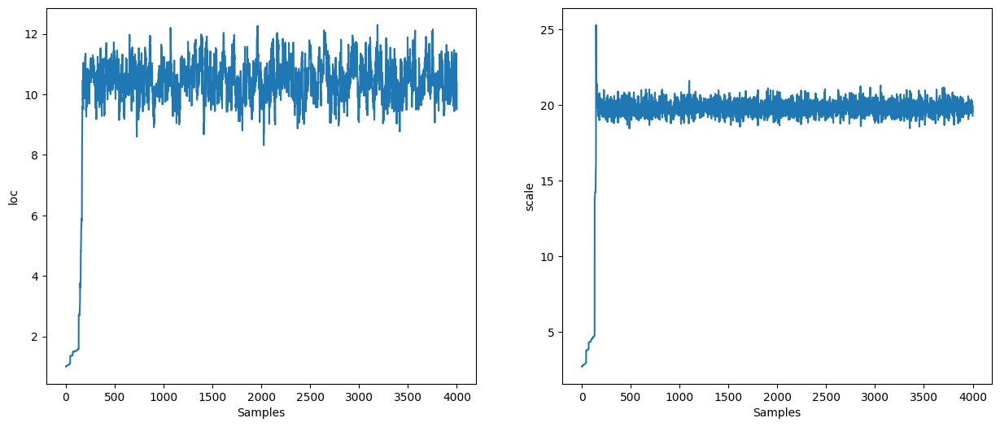
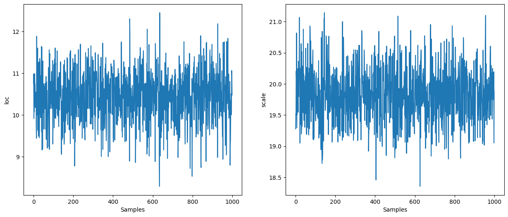

A Quick Introduction to Blackjax#
BlackJAX is an MCMC sampling library based on JAX. BlackJAX provides well-tested and ready to use sampling algorithms. It is also explicitly designed to be modular: it is easy for advanced users to mix-and-match different metrics, integrators, trajectory integrations, etc.
In this notebook we provide a simple example based on basic Hamiltonian Monte Carlo and the NUTS algorithm to showcase the architecture and interfaces in the library
import matplotlib.pyplot as plt
import numpy as np
import jax
import jax.numpy as jnp
import jax.scipy.stats as stats
import blackjax
from datetime import date
rng_key = jax.random.key(int(date.today().strftime("%Y%m%d")))
The Problem#
We’ll generate observations from a normal distribution of known loc and scale to see if we can recover the parameters in sampling. MCMC algorithms usually assume samples are being drawn from an unconstrained Euclidean space. Hence why we’ll log transform the scale parameter, so that sampling is done on the real line. Samples can be transformed back to their original space in post-processing. Let’s take a decent-size dataset with 1,000 points:
loc, scale = 10, 20
observed = np.random.normal(loc, scale, size=1_000)
def logdensity_fn(loc, log_scale, observed=observed):
"""Univariate Normal"""
scale = jnp.exp(log_scale)
logjac = log_scale
logpdf = stats.norm.logpdf(observed, loc, scale)
return logjac + jnp.sum(logpdf)
logdensity = lambda x: logdensity_fn(**x)
HMC#
Sampler Parameters#
inv_mass_matrix = np.array([0.5, 0.01])
num_integration_steps = 60
step_size = 1e-3
hmc = blackjax.hmc(logdensity, step_size, inv_mass_matrix, num_integration_steps)
Set the Initial State#
The initial state of the HMC algorithm requires not only an initial position, but also the potential energy and gradient of the potential energy at this position (for example, in the context of Bayesian modeling, the output of the log posterior function evaluated at the initial position). BlackJAX provides a new_state function to initialize the state from an initial position.
initial_position = {"loc": 1.0, "log_scale": 1.0}
initial_state = hmc.init(initial_position)
initial_state
HMCState(position={'loc': 1.0, 'log_scale': 1.0}, logdensity=Array(-34405.863, dtype=float32), logdensity_grad={'loc': Array(1280.2163, dtype=float32, weak_type=True), 'log_scale': Array(63976.848, dtype=float32, weak_type=True)})
Build the Kernel and Inference Loop#
The HMC kernel is easy to obtain:
hmc_kernel = jax.jit(hmc.step)
BlackJAX provides run_inference_algorithm as a convenience wrapper, or you can
write the loop manually with jax.lax.scan. The manual pattern is:
def inference_loop(rng_key, kernel, initial_state, num_samples):
@jax.jit
def one_step(state, rng_key):
state, _ = kernel(rng_key, state)
return state, state
keys = jax.random.split(rng_key, num_samples)
_, states = jax.lax.scan(one_step, initial_state, keys)
return states
Inference#
%%time
rng_key, sample_key = jax.random.split(rng_key)
states = inference_loop(sample_key, hmc_kernel, initial_state, 10_000)
mcmc_samples = states.position
mcmc_samples["scale"] = jnp.exp(mcmc_samples["log_scale"]).block_until_ready()
CPU times: user 3.27 s, sys: 133 ms, total: 3.4 s
Wall time: 2.07 s

NUTS#
NUTS is a dynamic algorithm: the number of integration steps is determined at runtime. We still need to specify a step size and a mass matrix:
inv_mass_matrix = np.array([0.5, 0.01])
step_size = 1e-3
nuts = blackjax.nuts(logdensity, step_size, inv_mass_matrix)
initial_position = {"loc": 1.0, "log_scale": 1.0}
initial_state = nuts.init(initial_position)
initial_state
HMCState(position={'loc': 1.0, 'log_scale': 1.0}, logdensity=Array(-34405.863, dtype=float32), logdensity_grad={'loc': Array(1280.2163, dtype=float32, weak_type=True), 'log_scale': Array(63976.848, dtype=float32, weak_type=True)})
%%time
rng_key, sample_key = jax.random.split(rng_key)
states = inference_loop(sample_key, nuts.step, initial_state, 4_000)
mcmc_samples = states.position
mcmc_samples["scale"] = jnp.exp(mcmc_samples["log_scale"]).block_until_ready()
CPU times: user 17.2 s, sys: 453 ms, total: 17.7 s
Wall time: 14.1 s

Use Stan’s Window Adaptation#
Specifying the step size and inverse mass matrix is cumbersome. We can use Stan’s window adaptation to get reasonable values for them so we have, in practice, no parameter to specify.
The adaptation algorithm takes a function that returns a transition kernel given a step size and an inverse mass matrix:
%%time
warmup = blackjax.window_adaptation(blackjax.nuts, logdensity)
rng_key, warmup_key, sample_key = jax.random.split(rng_key, 3)
(state, parameters), _ = warmup.run(warmup_key, initial_position, num_steps=1000)
CPU times: user 2.93 s, sys: 98.8 ms, total: 3.03 s
Wall time: 1.33 s
We can use the obtained parameters to define a new kernel. Note that we do not have to use the same kernel that was used for the adaptation:
%%time
kernel = blackjax.nuts(logdensity, **parameters).step
states = inference_loop(sample_key, kernel, state, 1_000)
mcmc_samples = states.position
mcmc_samples["scale"] = jnp.exp(mcmc_samples["log_scale"]).block_until_ready()
CPU times: user 2.11 s, sys: 38.6 ms, total: 2.15 s
Wall time: 864 ms
